Welcome to your first R tutorial!
R is a programming language used by many statisticians in order to develop software and wrangle, analyze and interpret data. We use the R programming language within an IDE (integrated development environment) named RStudio.
RStudio is an IDE that serves as an interface for us to code with the R programming language. It is available through both local and remote servers. A local server stores all files on your computer, while a remote server stores everything to the cloud, allowing you to access your data from any computer. I recommend downloading RStudio locally, as it is possible for the server to crash or be down at pivotal times. While this doesn’t happen too frequently, installing everything locally can ensure that it doesn’t occur.
R Markdown is a package and file type used in R to allow the user to output their work into a specific document/file type (such as PDF or HTML). For example, this tutorial was created in RStudio and exported into an HTML file. We typically use an R Markdown file in this class whenever we are coding or typing a document in R. To export R Markdown files, you can “knit” the file you’re working on into the file type of your choice. For example, to knit to PDF, click the arrow next to “Knit” and then “Knit to PDF.”
An RMD file is another way to say an R Markdown file. .rmd is simply the extension used for this file type.
An R package is a collection of certain functions, lines of code or datasets that you can install onto your R server for use in your project. Packages can be found in the Comprehensive R Archive Network (CRAN). You can find an explanation on how to install and use R packages in the code chunk below:
install.packages("x") # This is how you install R packages. Replace "x" with your desired package.
library(x) # This is how you tell R to make sure to include a certain installed package in your file. Replace x with your desired package.An R dataset is quite simply a dataset usable in R. Some common file types for datasets include .csv, .txt and .dat. R datasets allow the user to read in data to R in order to perform analyses. There are many different ways to read in this data; in particular, you can load a dataset from a library or package, scrape a website with permission (more on this at a later time) or even define a dataset yourself.
An R code chunk is a way to display code to the reader of your RMarkdown document. Inside the chunk, you type all of the necessary code. A quick way to create a chunk is with the shortcut, Control + Alt + I (or Command + Option + I for Mac users). The reason we place the code into different chunks throughout an RMarkdown file is for organization and easier reading. Additionally, a code chunk will have a few options on the right hand side; namely, “Modify Chunk Options,” (a gear icon) “Run All Chunks Above” (a sideways play icon on top of a horizontal line) and “Run Current Chunk” (a simple play icon). You can click on “Run Current Chunk” to run every line of code within a code chunk. You can think of this button as the green flag button from Scratch–when you click the green flag, everything connected within your chunk in Scratch will run. However, sometimes you may need to run previous code chunks before the one you select if your current one references details from a previous code chunk.
You can run many different things within an R code chunk, including R functions (more on that in the next section), basic calculations and saving variables. Run the code chunks below to see how you can use R as a calculator.
2 + 22 * 3a <- 2 + 4 # a = 6
b <- 3 * 2 # b = 6
c <- a + b # c = a + b = 6 + 6
c # c = 12These basic calculations are just like the green “operator” blocks in Scratch! And as you can see above, you can save variables as you perform your calculations–a similar process to the orange “variable” blocks in Scratch. Just like with Scratch, you can define your own variables equal to certain values, or even define your own variables equal to other variables. You’ll need to define variables and datasets many times throughout your journey with R!
You can think of an R function as a “Scratch block” that can be used within RStudio. But how do we know which functions we can use? Unlike Scratch, we must type out the syntax for each function we want to use; we can’t drag and drop from a menu. To use a function, we can load a package or create our own. Functions within a package allow the user to perform several tasks; for example, gf_histogram() allows one to create a histogram, while confint() allows one to create a confidence interval. Functions that are created by the user usually involve a set of processes a user places inside { } to manipulate certain variables of data.
Run the R functions below! You can run individual lines by selecting the line and then pressing Ctrl + Enter (or Command + Enter for Mac users). However, this feature isn’t available to use within the tutorial. Alternatively, you can press the “play” button to run the entire R code chunk.
gf_histogram(~ cesd, data = HELPrct, bins = 10)
gf_bar(~ substance, data = HELPrct)Functions in R work in a specific way. Typically, the format is function_name(inputs), where inputs can be a dataset or number of variables. Some examples of functions that require a dataset as an input include dim(), names(), msummary() and head(). This is similar to how code works in Scratch, too! In Scratch, the blue “motion blocks” and purple “looks blocks” both require you to specify an object to perform the indicated action. For example, if you use a purple “looks block” to have a sprite say “Hello,” inside the block you would type “Hello.” It works the same way in R. For example, you can use names(dataset) to obtain all of the variable names in that particular dataset, or msummary(dataset) to obtain a summary of your specified model.
Use the dim(), names(), msummary() and head() functions with the HELPrct dataset as the input. What does each function seem to do? If you’re not sure, read on to the next section to see how you can find out!
dim(HELPrct)
names(HELPrct)
msummary(HELPrct)
head(HELPrct)Whenever you are in doubt about what something in R does, you can use ? or help(). These functions bring up the R documentation of the thing you are questioning in the “Help” tab. The general syntax is ?question or help(question), where question is the thing you are interested in learning about, whether it be a function, dataset or package. For example, let’s look into the names() function from the previous exercise. If you weren’t too sure earlier about the usage of that function, type ?names() or help(names) within an R code chunk to learn more.
?names() # option 1
help(names) # option 2For another example, let’s look into gf_histogram(). In the last section, we ran the gf_histogram() function. Within that function was bins = 10. Do you know what that means within this context? What if you want to know more about this argument, or other arguments within the function?
?gf_histogram() # option 1
help(gf_histogram) # option 2After running either line, you can see a description of the formula, how it’s used (i.e. the syntax), the list of arguments and examples. To learn more about the bins argument, for example, navigate to the “Arguments” section and locate bins. There, you’ll find a description of its usage.
Use ? or help() to learn more about the HELPrct dataset.
?HELPrct # option 1
help(HELPrct) # option 2Arguments in R are code that is added on to a function in order to modify it in some way. For example, the argument bins for the function gf_histogram() controls the number of intervals the histogram contains. Another common example are the color and fill arguments. We can use these to change the color within a plot or graph (e.g. within the gf_histogram() function). Specifically, the color argument specifies what color the graph’s outline is, while fill dictates the filled-in color. For these arguments, like many others, you will have to use quotation marks " to type in your specified entry. See the code chunk below for an example!
gf_histogram(~ cesd, data = HELPrct, bins = 10, color = "mediumpurple4", fill = "mediumpurple1")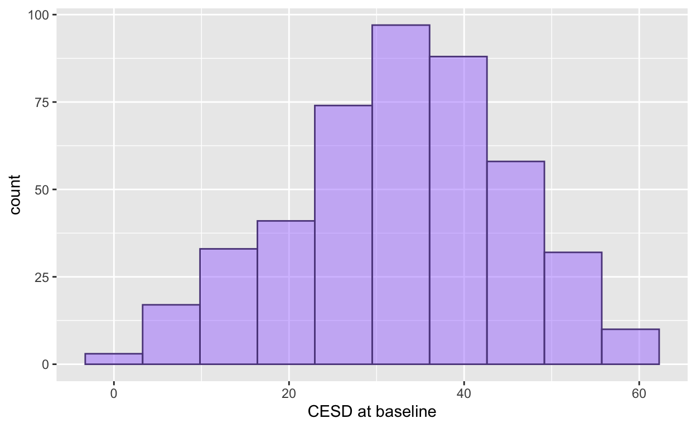
Add the bins, color and fill arguments within the gf_histogram() function below so that the histogram is separated into 6 intervals, is outlined in red and is filled in blue.
gf_histogram(~ cesd, data = HELPrct)gf_histogram(~ cesd, data = HELPrct, bins = 6, color = "red", fill = "blue")Univariate analysis involves the analysis of only a single variable. There are two types of variables that we can perform analyses on: categorical and quantitative.
Categorical variables are variables are variables that have a trait, or category assigned to them, rather than a numerical value. For example, sex would be a categorical variable (male or female). We can find numerical summaries of categorical variables with a frequency or relative frequency table; we can find create graphical displays with a bar chart or a pie chart.
Quantitative variables are variables that have a numerical value assigned to them. For example, age would be a quantitative variable. We can find summary statistics for quantitative variables through the use of five-number summaries, the mean and the standard deviation; we can create graphical displays with a histogram, box plot or density plot.
When using only one variable in R, we typically precede the variable with a tilde, e.g. function_name(~ Var, data = x). Some example functions that only use one variable include favstats(), tally(), mean(), sd(), gf_histogram() and gf_dens(), among others.
You can create frequency tables using the tally function. You can create relative frequency tables by including format = "proportion" inside the function. Relative frequency tables are helpful when you are interested in the proportion each category makes up of a variable.
tally(~ substance, data = HELPrct)## substance
## alcohol cocaine heroin
## 177 152 124tally(~ substance, data = HELPrct, format = "proportion")## substance
## alcohol cocaine heroin
## 0.3907285 0.3355408 0.2737307Create a frequency table for the homeless variable of the HELPrct dataset.
tally(~ homeless, data = HELPrct)Create a relative frequency table for the sex variable of the HELPrct dataset.
tally(~ sex, data = HELPrct, format = "proportion")Bar charts are created using the gf_bar function. You can title the graph and the axes with the arguments title, xlab and ylab. You can also color code each category of a variable using the argument fill =. Here, I set fill = ~ substance, so that the bars are color-coded by substance.
gf_bar(~ substance, data = HELPrct, fill = ~ substance,
xlab = "Substance",
ylab = "Count",
title = "Primary Substances of Abuse")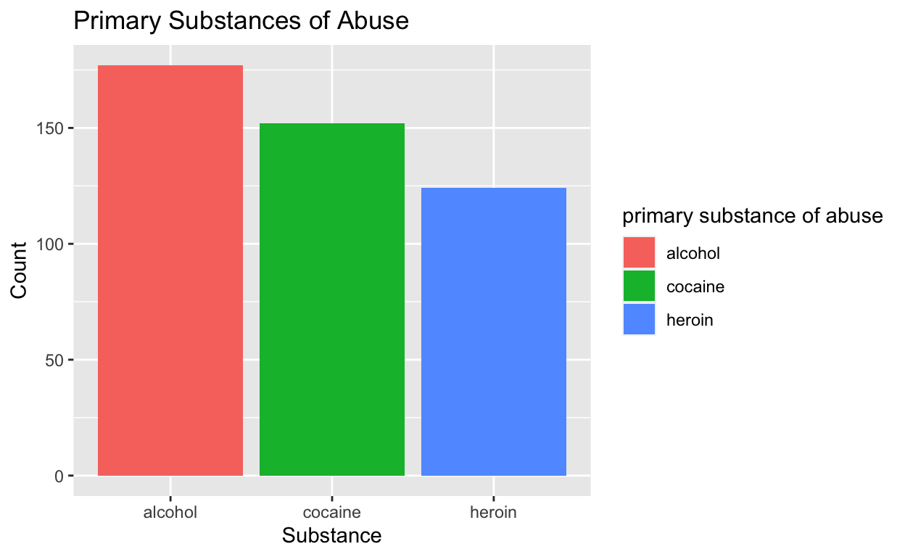
You can also control the color of the bar and its outline when creating any chart.
gf_bar(~ sex, data = HELPrct, color = "darkorchid4", fill = "darkorchid1")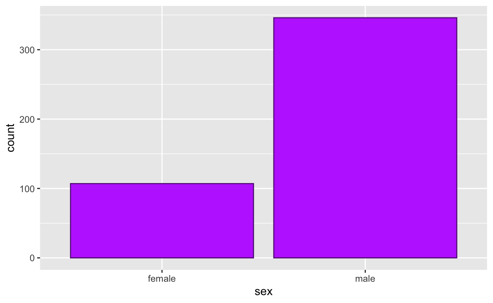
The argument color = manipulates the outline of the bar. Here, I set it equal to darkorchid4, which is a dark purple color. fill = controls the color of the bar itself. I made it darkorchid1, a light purple color. You could simply type red or blue, but sometimes it`s fun to be fancy! You can find a handy guide to all the different colors here:
http://www.stat.columbia.edu/~tzheng/files/Rcolor.pdf
Create a bar chart of the homeless variable of the HELPrct dataset. Color code the bars by the homeless variable.
gf_bar(~ homeless, data = HELPrct, fill = ~ homeless)Create a bar chart of the treat variable of the HELPrct dataset. Color the bars forestgreen and fill them by the treat variable. Title the graph “Randomized to HELP Clinic.”
gf_bar(~ treat, data = HELPrct, color = "forestgreen", fill = ~ treat,
title = "Randomized to HELP Clinic")You can create a pie chart with the pie() function. You can title the graph using the main = argument. You typically pair the pie() function with the tally() function. If you’d like to sort the categories in a nicer way, you can make use of the sort() function as well. You can also orient the pie chart clockwise or counter-clockwise using the argument clockwise.
pie(sort(tally(~ substance, data = HELPrct)), main = "Primary Substances of Abuse", clockwise = TRUE)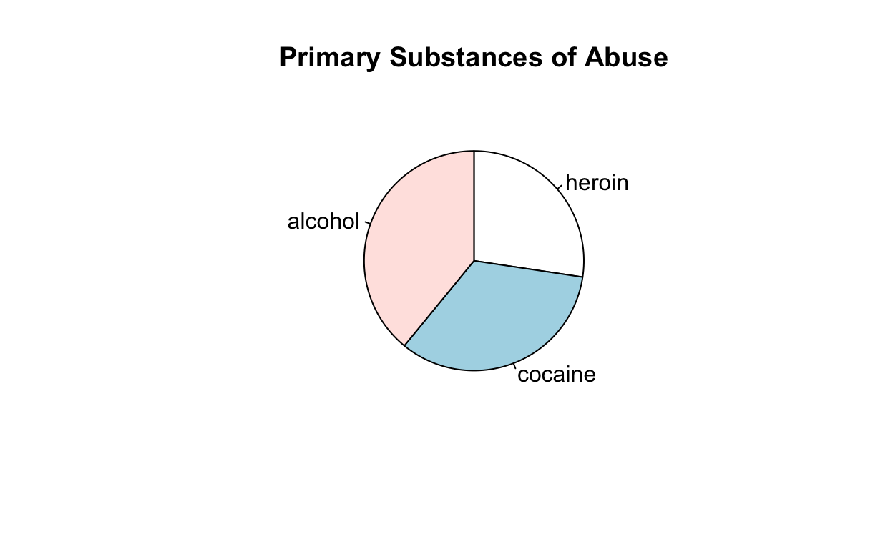
pie(tally(~ substance, data = HELPrct))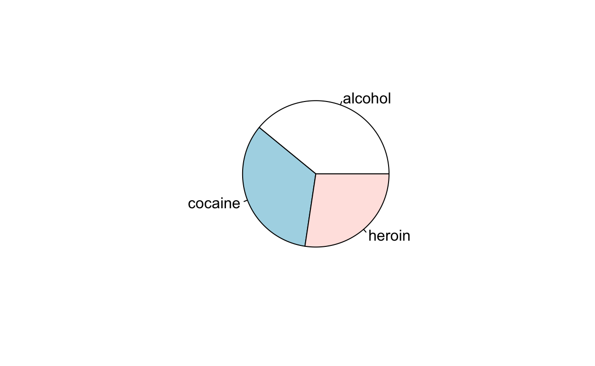
Create a pie chart of the sex variable from the HELPrct dataset.
pie((tally(~ sex, data = HELPrct)))Create a sorted pie chart of the racegrp variable from the HELPrct dataset. Make sure that it’s oriented clockwise and title the graph “Race/Ethnicity.”
pie(sort(tally(~ racegrp, data = HELPrct)), clockwise = TRUE, main = "Race/Ethnicity")You can use the favstats() function to find the five-number summary. favstats() also finds the mean, standard deviation, and total number of observations.
favstats(~ cesd, data = HELPrct)favstats(~ i1, data = HELPrct)Find the five-number summary for the age variable from the HELPrct dataset.
favstats(~ age, data = HELPrct)Find the five-number summary for the dayslink variable from the HELPrct dataset.
favstats(~ dayslink, data = HELPrct)You can create a box plot (aka a “Box-and-Whisker Plot”) using the gf_boxplot function.
gf_boxplot(~ cesd, data = HELPrct)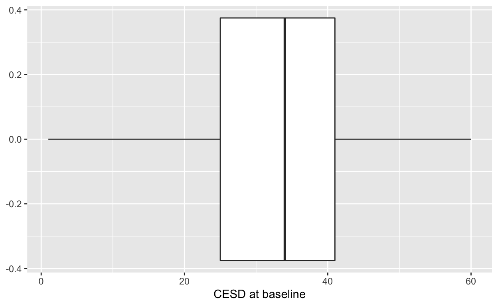
gf_boxplot(~ age, data = HELPrct, color = "goldenrod4", fill = "goldenrod1",
title = "Subject Ages")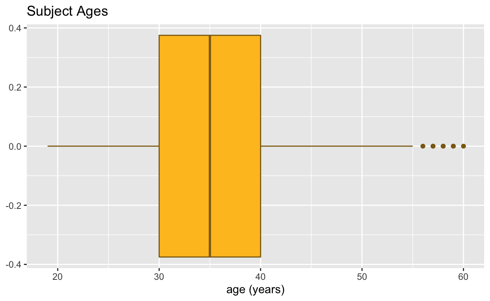
Create a box plot of the i1 variable from the HELPrct dataset.
gf_boxplot(~ i1, data = HELPrct)Create a box plot of the i2 variable from the HELPrct dataset. Color it “deeppink4” and fill it “deeppink1.” Title the graph “Maximum Number of Drinks Consumed Per Day.”
gf_boxplot(~ i2, data = HELPrct, color = "deeppink4", fill = "deeppink1",
title = "Maximum Number of Drinks Consumed Per Day")gf_histogram creates a histogram. Histograms are often used when performing univariate analyses.
gf_histogram(~ i1, data = HELPrct, bins = 15)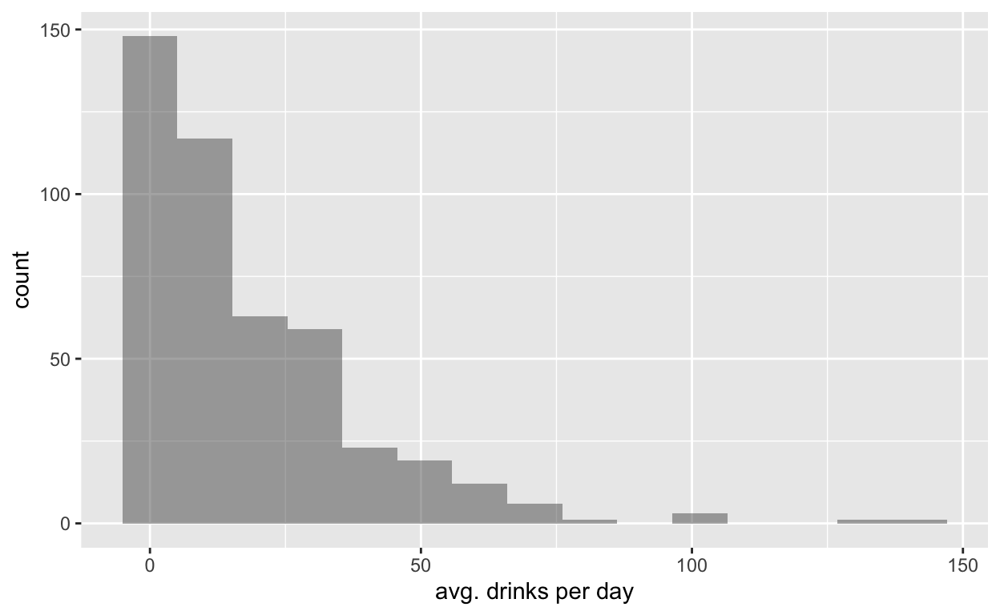
gf_histogram(~ cesd, data = HELPrct, bins = 15,
title = "Center for Epidemiologic Studies Depression Measure at Baseline",
ylab = "Count",
xlab = "Depression Score",
color = "darkorchid4",
fill = "darkorchid1")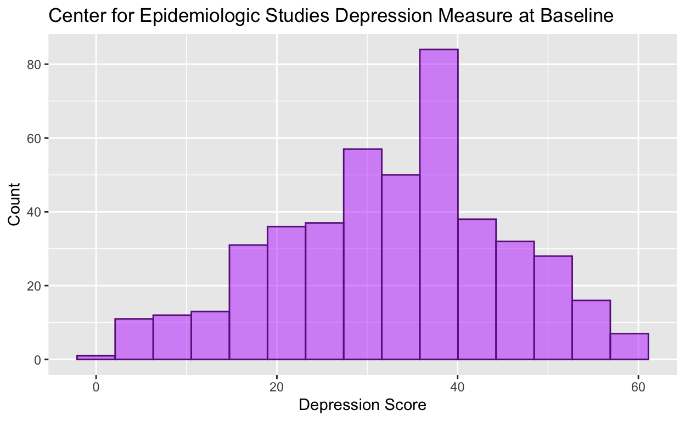
When creating histograms, you typically use one variable to assess the counts of that variable. In this example, I used cesd of the HELPrct dataset. The histogram created is then automatically grouped into a certain number of bins, which are intervals of data. You can control the size of these intervals, and other factors, by using arguments. For example, you can type bins = and add a number after the equals sign to specify the number of intervals the histogram uses. I used 10 here, so 10 intervals of height were created.
Create a histogram that analyzes the i2 variable of the HELPrct dataset.
gf_histogram(~ i2, data = HELPrct)Create a histogram that analyzes the age variable of the HELPrct dataset. Set the number of bins to 15, outline the histogram bars in blue and fill the histogram bars orange.
gf_histogram(~ age, data = HELPrct, bins = 15,
color = "blue",
fill = "orange")You can create a density plot using the gf_dens function.
gf_dens(~ age, data = HELPrct)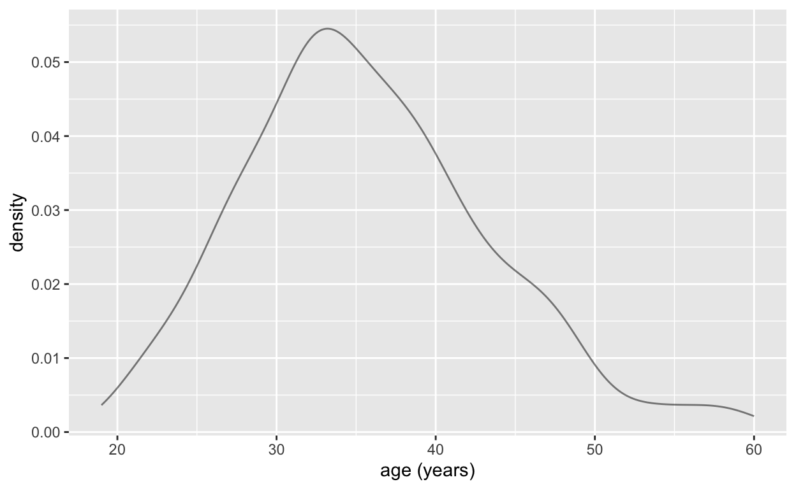
gf_dens(~ cesd, data = HELPrct,
title = "Center for Epidemiologic Studies Depression Measure at Baseline",
ylab = "Density",
xlab = "Depression Score",
color = "chocolate")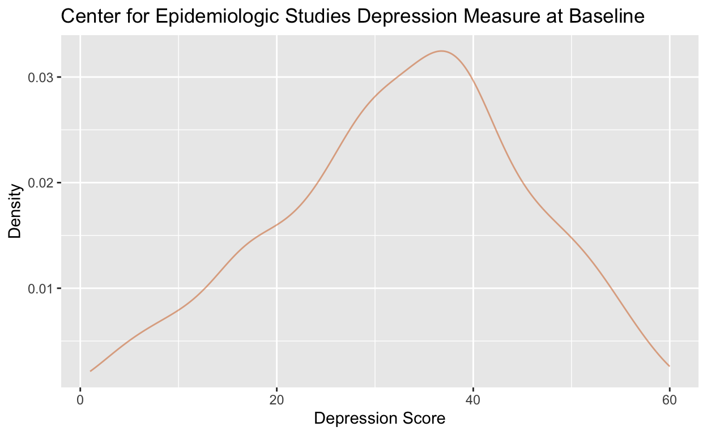
Create a density plot that analyzes the i1 variable from the HELPrct dataset.
gf_dens(~ i1, data = HELPrct)Create a density plot that analyzes the i2 variable from the HELPrct dataset. Label the axes and give the plot a title. Color the plot anything you’d like!
gf_dens(~ i2, data = HELPrct,
title = "Maximum Number of Drinks Consumed Per Day",
ylab = "Density",
xlab = "Number of Drinks",
color = "chocolate")Bivariate analysis involves the analysis of two variables. Here, we can find numerical summaries for 2 categorical variables using a two-way table; we can create graphical displays using a side-by-side/segmented bar chart or a mosaic plot. We can find summary statistics for 2 quantitative variables using summary() and by finding the correlation; we can create graphical displays using a scatterplot of a simple linear regression (SLR) model.
Bivariate analysis also allows us to analyze between 1 categorical variables and 1 quantitative variable. We can find summary statistics by using favstats() by groups; we can create graphical displays with side-by-side boxplots/histograms and overlaid density plots.
When using two variables in R, one variable typically comes before the tilde, with the other variable coming after. The variable before the tilde is known as the “response variable” and the variable after the tilde is the “explanatory variable.” The explanatory variable is plotted on the x-axis, and the response variable is plotted on the y-axis. The explanatory variable is used to explain how change occurs in the response variable.
Some functions in R that make use of two variables include gf_boxplot(), favstats(), t.test(), gf_density() and with(). A typical example of syntax would be gf_boxplot(Y ~ X, data = ).
The tally() function can also create two way tables! To do so, you simply add more variables to the mix. You can either have one variable on one side of ~ and the other on the other side, or you can put both on the left side by adding a +. You can also format the table to give the proportion instead of counts by using the format = "proportion" argument.
tally(sex ~ substance, data = HELPrct)## substance
## sex alcohol cocaine heroin
## female 36 41 30
## male 141 111 94tally(~ sex + substance, data = HELPrct)## substance
## sex alcohol cocaine heroin
## female 36 41 30
## male 141 111 94tally(~ substance | sex, format = "proportion", data = HELPrct) # this is a conditional distribution of `substance` given `sex`## sex
## substance female male
## alcohol 0.3364486 0.4075145
## cocaine 0.3831776 0.3208092
## heroin 0.2803738 0.2716763Create a two-way table of the variables sex and homeless from the HELPrct dataset. Format it to give out proportions.
tally(~ sex + homeless, format = "proportion", data = HELPrct)Create a two-way table for the variable sex given the variable homeless from the HELPrct dataset.
tally(~ sex | homeless, data = HELPrct)You can create side-by-side bar charts by using the gf_counts function. You can use one categorical variable to separate the bar charts, while you can use the other to color code the separate bars. Below, I separated the bar charts by sex, while having each bar chart create a separate bar for the primary substance of abuse. You need to add the argument, position = position_dodge() to make the side-by-side bar charts appear how we are used to them. Without the argument, the bar chart will have each category placed on top of each other.
gf_counts(~ sex, fill = ~ substance, data = HELPrct) # without the position argument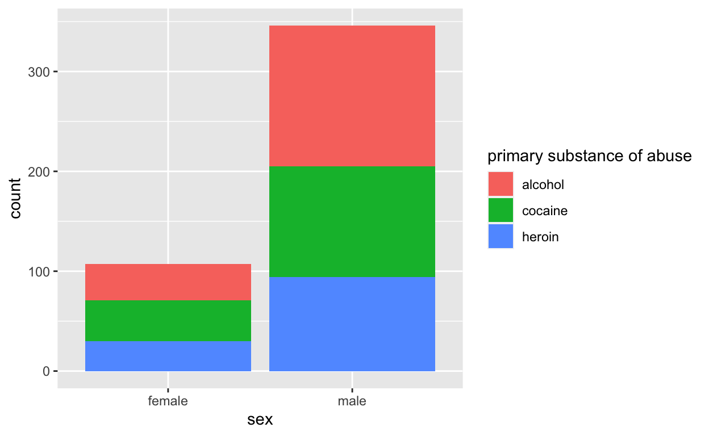
gf_counts(~ sex, fill = ~ substance, position = position_dodge(), data = HELPrct)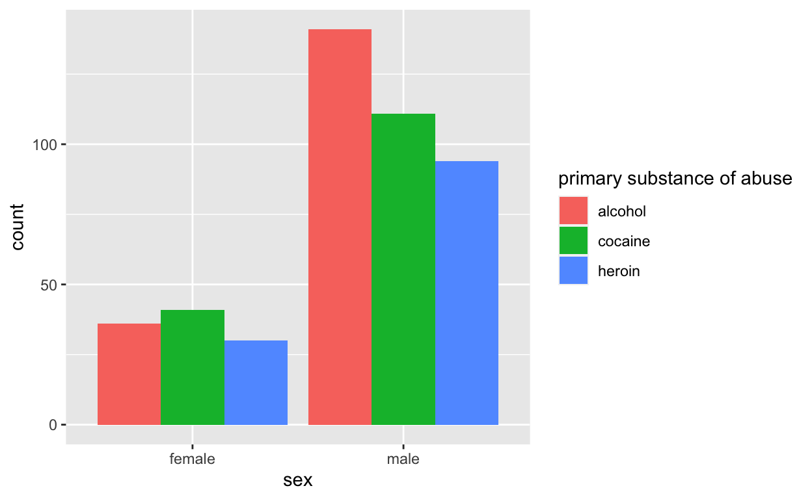
Create a side-by-side bar chart of the variable homeless from the HELPrct dataset. Fill the chart by the variable substance from the HELPrct dataset.
gf_counts(~ homeless, fill = ~ substance, position = position_dodge(), data = HELPrct)Create a side-by-side bar chart of the variable racegrp from the HELPrct dataset. Fill the chart by the variable sex from the HELPrct dataset.
gf_counts(~ racegrp, fill = ~ sex, position = position_dodge(), data = HELPrct)You can create a segmented bar chart with the gf_percents function. This looks similar to using the gf_counts function without the position argument. However, a segmented bar chart shows the percentage each category makes up of the whole (1.00). The segmented bar chart does include the position argument, though. Here, adding position = "fill" allows the segmented bar chart to be shown with each category as a percentage of the whole of that category. Without the argument, the segmented bar chart shows the percentages as a whole from the variable itself.
gf_percents(~ sex , fill = ~ substance, data = HELPrct) # without the position argument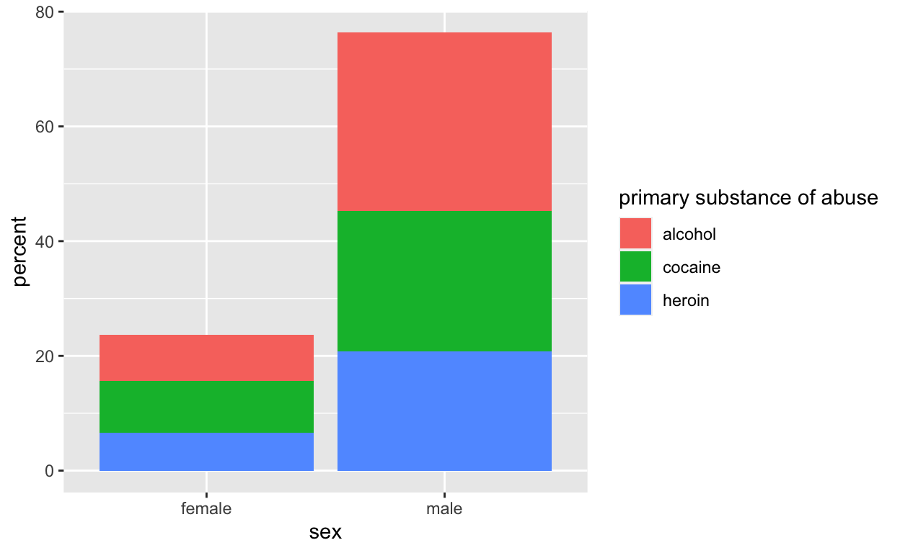
gf_percents(~ sex , fill = ~ substance, position = "fill", data = HELPrct)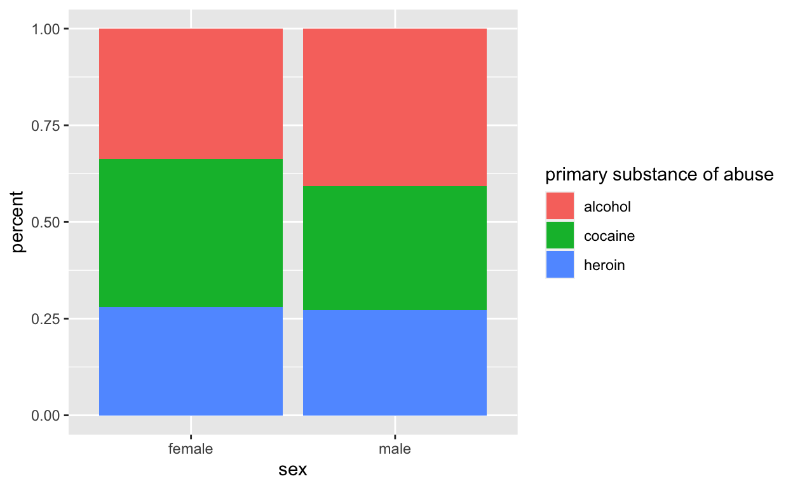
Create a segmented bar chart of the variable anysub of the HELPrct dataset. Fill the chart with the racegrp variable of the HELPrct dataset.
gf_percents(~ anysub , fill = ~ racegrp, position = "fill", data = HELPrct)Create a segmented bar chart of the variable treat of the HELPrct dataset. Fill the chart with the sex variable of the HELPrct dataset.
gf_percents(~ treat , fill = ~ sex, position = "fill", data = HELPrct)You can create mosaic plots using the mosaicplot() function. The syntax inside the () is similar to what we’ve seen before. The variables can be placed just like in a two-way table, and adding a title is simple using the main = argument. Another argument that returns is color =. If you set the argument equal to TRUE, you can auto-color the plot. You can also choose the colors yourself. In the code chunk below, I assigned a new variable colors equal to red, blue and yellow. In R, you can select multiple things by using c().
mosaicplot(sex ~ substance, color = TRUE, main = "Substance vs Sex", data = HELPrct)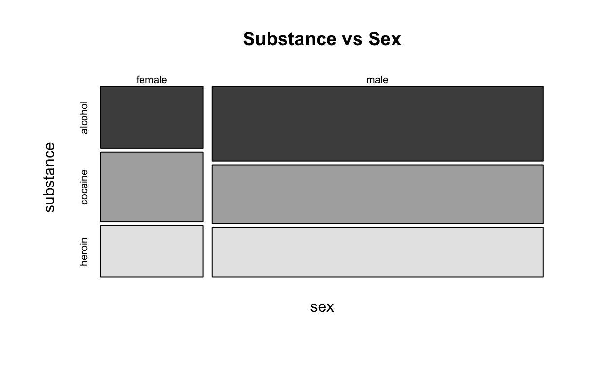
colors <- c("red", "blue", "yellow")
mosaicplot(~ sex + substance, color = colors, main = "Substance vs Sex", data = HELPrct)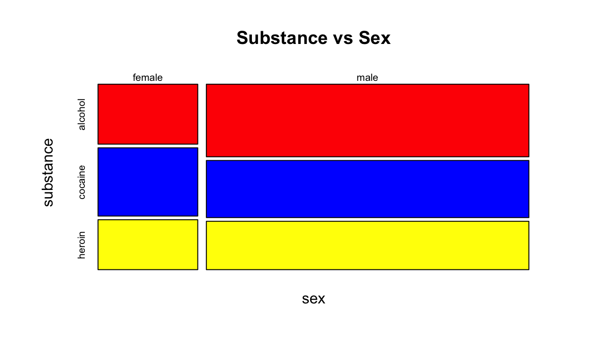
Create a mosaic plot of the variables linkstatus (response) and substance (explanatory) from the HELPrct dataset.
mosaicplot(linkstatus ~ substance, color = TRUE, data = HELPrct)Create a mosaic plot of the variables treat (response) and substance (explanatory) from the HELPrct dataset. Set the colors to chocolate4, chocolate3 and chocolate2 and give the plot an appropriate title.
colors <- c("chocolate4", "chocolate3", "chocolate2")
mosaicplot(treat ~ substance, color = colors, main = "Substance vs Treatment", data = HELPrct)You can create a scatterplot using the gf_point() function and calculate the correlation using the cor() function. You can also create a line of best fit by piping gf_point() and including gf_lm(). We will get more into what piping is later in this tutorial.
gf_point(cesd ~ mcs, data = HELPrct)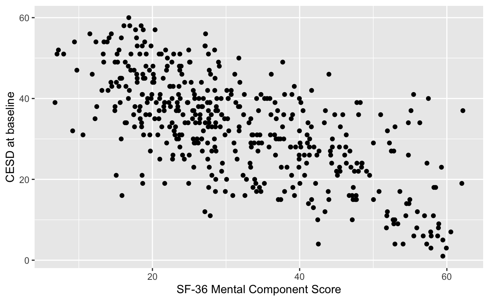
cor(cesd ~ mcs, data = HELPrct)## [1] -0.6819239gf_point(cesd ~ mcs, data = HELPrct,
title = "Depression Measurement vs SF-36 Mental Component Score",
xlab = "SF-36 Mental Component Score",
ylab = "Depression Measurement") %>%
gf_lm()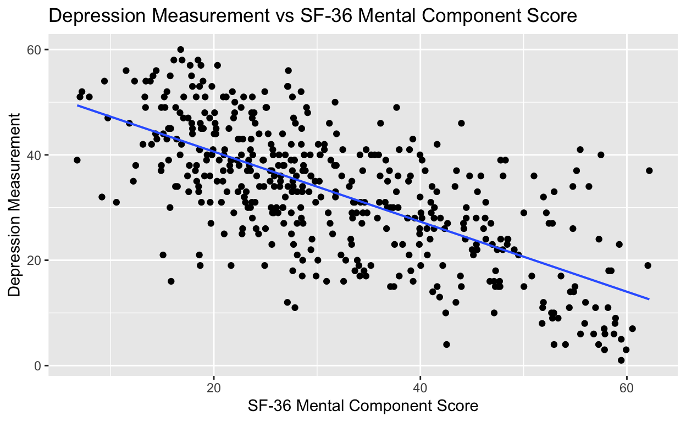
Create a scatterplot with cesd as the response variable and age as the explanatory variable.
gf_point(cesd ~ age, data = HELPrct)Find the correlation between cesd and age.
cor(cesd ~ age, data = HELPrct)You will find that the code for this section is similar to ones we’ve learned earlier in this tutorial. The difference is that now we must take into account both variables at play inside the () of each function.
favstats(~ cesd | substance, data = HELPrct) # cesd given substancefavstats(cesd ~ substance, data = HELPrct)Find the five-number summary with cesd as the response variable and sex as the explanatory variable.
favstats(cesd ~ sex, data = HELPrct)Find the five-number summary of cesd given sex.
favstats(~ cesd | sex, data = HELPrct)gf_boxplot(cesd ~ substance, data = HELPrct)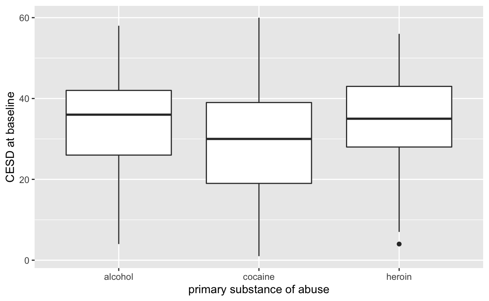
colors <- c("magenta", "cyan", "yellow")
gf_boxplot(cesd ~ substance, fill = colors, data = HELPrct,
title = "CESD of Primary Substance of Abuse")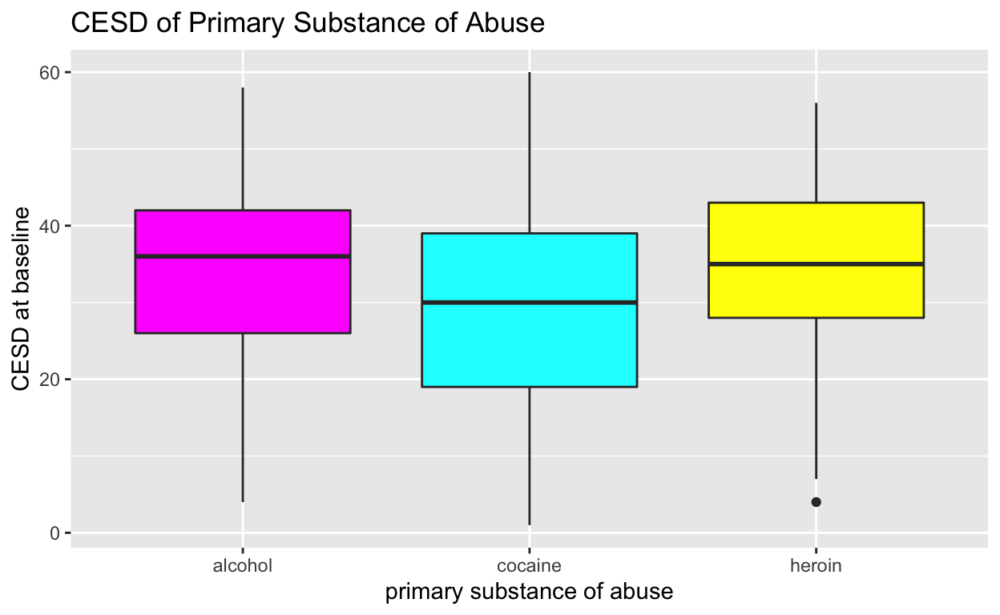
Create a side-by-side boxplot with cesd as the response variable and sex as the explanatory variable.
gf_boxplot(cesd ~ sex, data = HELPrct)Create a side-by-side boxplot with sexrisk as the response variable and substance as the explanatory variable.
gf_boxplot(sexrisk ~ substance, data = HELPrct)Note: for side-by-side histograms, you must place your response variable and explanatory variable in the format gf_histogram(~ response | explanatory).
gf_histogram(~ cesd | substance, bins = 10, data = HELPrct)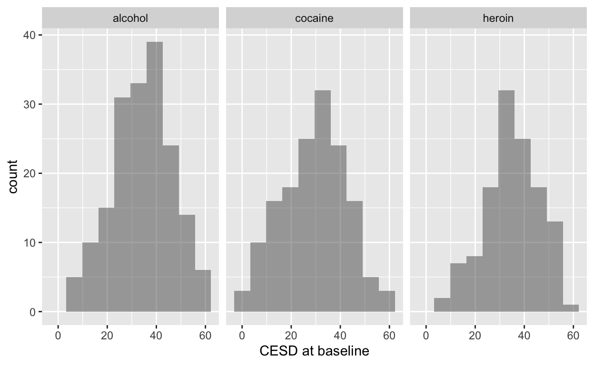
gf_histogram(~ age | sex, color = "bisque4", fill = "bisque1", data = HELPrct)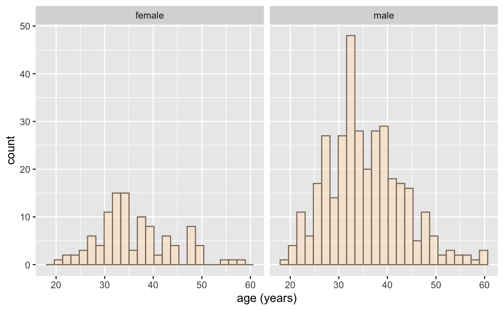
Create a side-by-side histogram of sexrisk given substance.
gf_histogram(~ sexrisk | substance, data = HELPrct)Create a side-by-side histogram of cesd given sex.
gf_histogram(~ cesd | sex, data = HELPrct)gf_dens(~ cesd, color = ~ substance, data = HELPrct)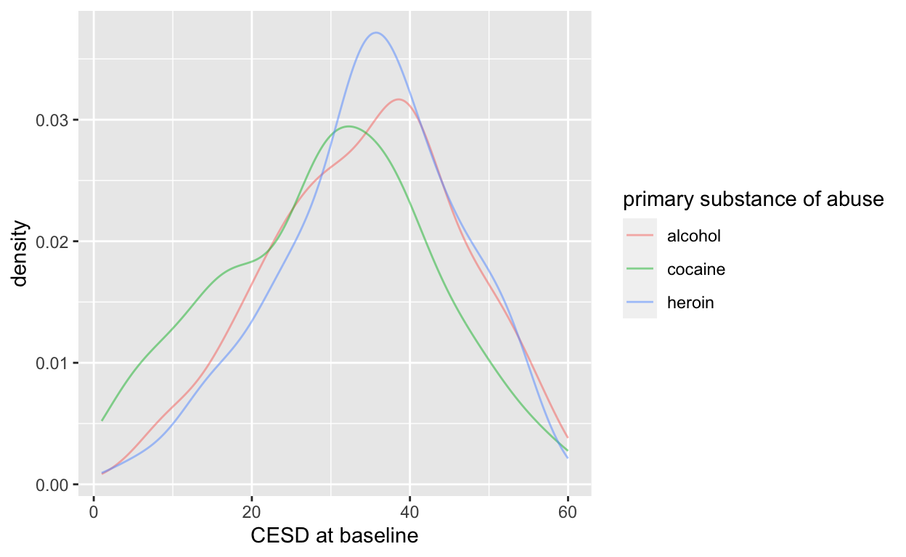
gf_dens(~ age, color = ~ sex, data = HELPrct)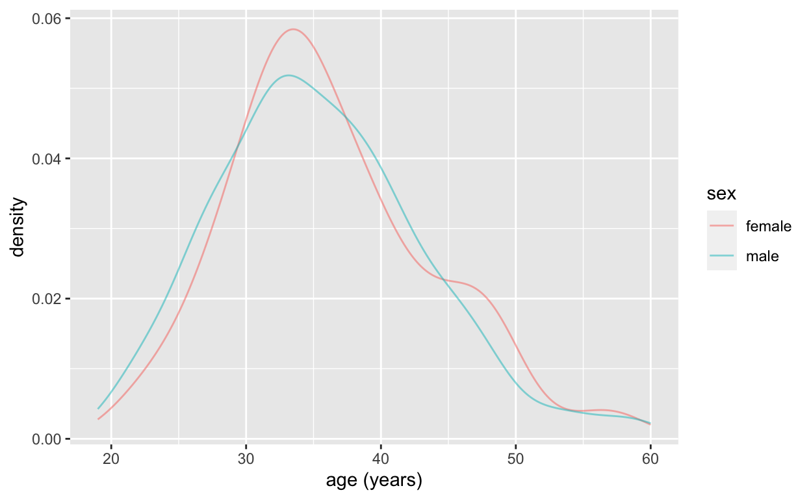
Create an overlaid density plot of the variable cesd color coded by sex.
gf_dens(~ cesd, color = ~ sex, data = HELPrct)Create an overlaid density plot of the variable sexrisk color coded by substance.
gf_dens(~ sexrisk, color = ~ substance, data = HELPrct)The symbol %>% (a.k.a the “pipe”) is an operator that allows the left-hand side values to be “piped” INTO the functions that are on the right-hand side.
The first graph you see here is simply the output from gf_qq(). However, the second graph adds a pipe to includes not only the sample vs theoretical points, but also the reference line to check normality.
gf_qq(~ cesd | substance, data = HELPrct, color = ~ substance)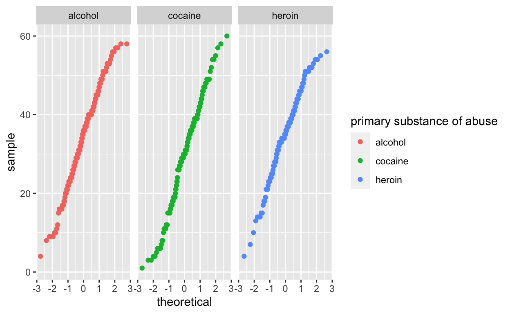
gf_qq(~ cesd | substance, data = HELPrct, color = ~ substance) %>% # first line: plots points w/ color facet
gf_qqline() # second line: the output from the previous is piped in = superimposes a line.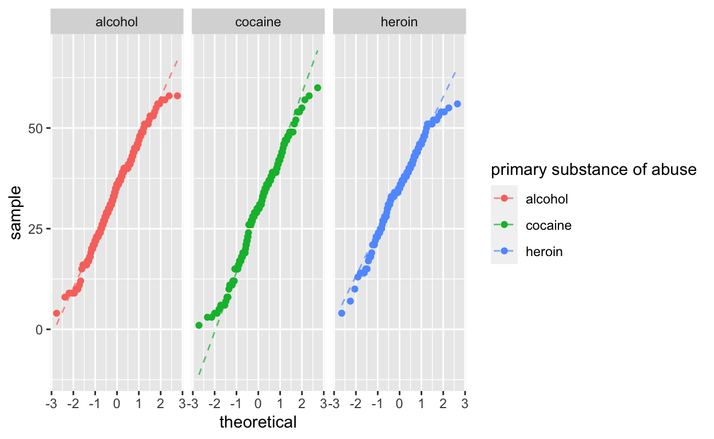
Here, the second output of gf_point() is piped into gf_lm() so that our output also includes a line of best fit.
gf_point(cesd ~ mcs, data = HELPrct)gf_point(cesd ~ mcs, data = HELPrct) %>% # first line: plots points on scatterplot
gf_lm() # second line: the output from the previous is piped in = superimposes a line of best fit.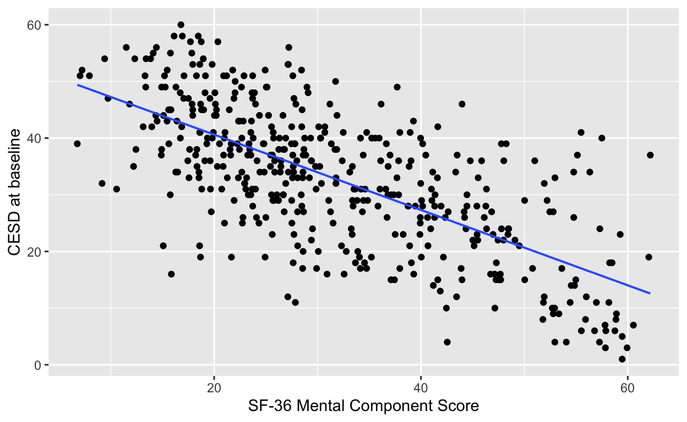
In simpler terms, you can think of pipes as “chains.” After the main command, a chain is linked to have a command follow after it. However, since it is still directly linked, the function that occurs is done to the main command. Overall, we use pipes for many different types of graphs in order to properly label and analyze our data.
Create a QQ plot of cesd given sex and color code it by sex. Pipe it to superimpose a QQ line.
gf_qq(~ cesd | sex, data = HELPrct, color = ~ sex) %>%
gf_qqline()Create a scatterplot with mcs predicting pcs. Pipe it to include a line of best fit.
gf_point(pcs ~ mcs, data = HELPrct) %>%
gf_lm()